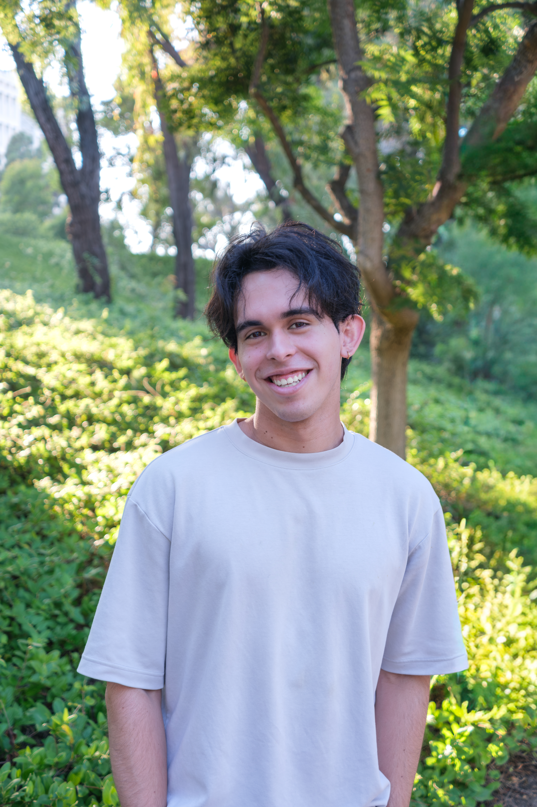
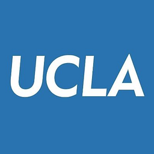
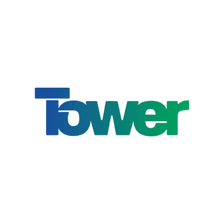
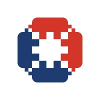

About Me
I'm a current 1st year M.S./Ph.D. student in Electrical and Computer Engineering at UCLA, part of
the Terahertz and Infrared Photonics Group. My research will focus on the generation of terahertz radiation using
quantum cascade vertical external cavity surface emitting lasers (QC-VECSELs), and the application of these devices.
I received my B.S. in Electrical Engineering from UC Irvine in 2026, specializing in semiconductors and optical
electronics. It was here that I first gained exposure to photonics when I joined the Shcherbakov Nanophotonics Lab.
My work in that lab focused on studying the unique properties of low-dimensional semiconductor materials such as
phonon polariton propagation and single photon emission. As a Quantum Undergraduate Research Opportunity Program (QUROP) fellow,
I led my own independent research project on the polarization and enhancement of single photon emitters in hexagonal boron nitride (hBN) using plasmonic nanostructures.
Through this project I gained experience in nanofabrication, building custom optical setups, and performing full-wave electromagnetic (EM) simulations.
As part of the Campus Wide Honors Program, this work culminated into my Senior thesis, which I presented at the 2026 UCI Undergraduate Research Symposium.
Beyond my research lab, I also developed a passion for computer science and AI principles during my senior design
project, "HoloPhase", where I helped develop a system for real-time holographic phase retrieval using a physics informed inverse design model.
This project inspired me to explore how AI principles can be used in conjunction with photonic devices for their further development and application.
However, some of my most meaningful experiences during my undergrad came from contributing to the engineering community by helping start an engineering project program within
my organization and during as a learning assistant. Both of these experiences made me passionate about continuing to give back to the engineering community and helping to
improve education and opportunities available to students.

Education

M.S./Ph.D., Electrical and Computer Engineering
Researching terahertz photonics and quantum cascade lasers.
B.S., Electrical Engineering
Specialization in semiconductors and optical electronics; coursework and research spanning semiconductor fabrication, MEMS devices, nano-optics, and quantum computing.
Work Experience

Failure Analysis Engineering Intern
Conducting physical and electrical failure analysis (FA) on Silicon-Germanium (SiGe) and Silicon Photonics (SiPho) devices and correlating FA findings with electrical test data to identify root causes.

Quality Engineering Intern
Conducted JEDEC standard reliability tests, including Moisture Sensitivity Level, Temperature Cycling, and High-Temperature Storage Life on micro electro-mechanical (MEMS) devices, to validate device integrity and ensure product reliability and performance.
Learning Assistant
Provided dedicated assistance to students in introductory physics courses (waves and optics, electricity and magnetism, classical mechanics) by collaborating with professors and teaching assistants to facilitate engaging class sessions and address students' questions.
Skills & Tools
Beyond the lab
Outside of engineering I love to play both guitar and piano. Recently I have been interested in improvising and composing my own music. Sometimes I upload my music to spotify, which you can view here! Another one of my passions is photography and you can see some of my photos below.
Let's talk
Want to collaborate or just say hi? I'd love to hear from you.